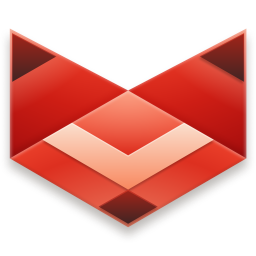

softwares
Software here are for Windows systems!

Firefox - Free & open-source browser!
Based on Gecko Engine, links below are meant for Windows 7/8/8.1, but you can install it on modern Windows!

r3dfox - Latest Firefox for Windows Vista+
Based on Gecko Engine
Supermium - Modern Chromium for Windows XP+
Chrome lol

Vesktop - The "cutest" Discord mod
Vesktop does not actually support systems under Windows 10, but luckly there is a fork of Vesktop which is Vesktop-Legacy, check it out! download
- Vesktop 1.6.3 (x64 & x86) download
More things to come, more apps will be added in the next update!